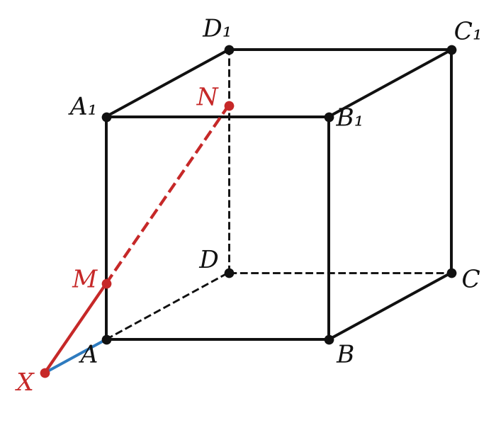

Теория
Пространственные фигуры
Кроме точек, прямых и плоскостей, стереометрия изучает пространственные фигуры — фигуры, у которых не все точки лежат в одной плоскости. Ты их давно знаешь: цилиндр (банка), конус (вафельный рожок), шар (мяч), пирамида, куб (игральный кубик). Тела вращения — цилиндр, конус, шар — будут в 11 классе, а сейчас займёмся многогранниками.
Поверхность многогранника состоит из многоугольников. Эти многоугольники называют гранями, их стороны — рёбрами, а вершины — вершинами многогранника.

Пирамида
У пирамиды одна грань — многоугольник, его называют основанием. Остальные грани — треугольники с общей вершиной; это боковые грани, а их общая вершина — вершина пирамиды. Рёбра, выходящие из вершины, — боковые рёбра, остальные — рёбра основания. Пирамиду называют по числу углов основания: треугольная, четырёхугольная, пятиугольная…
Треугольную пирамиду называют тетраэдром. У тетраэдра все четыре грани — треугольники, и любую из них можно считать основанием.
Призма, параллелепипед, куб


У призмы два равных многоугольника — основания (нижнее и верхнее), а остальные грани — параллелограммы, это боковые грани. Рёбра, соединяющие вершины оснований (AA₁, BB₁, CC₁), — боковые рёбра.
Частный вид четырёхугольной призмы — прямоугольный параллелепипед (коробка из-под обуви): все шесть граней — прямоугольники. А его частный вид — куб: все шесть граней — равные квадраты.
Считаем вершины, рёбра и грани
Не надо заучивать — достаточно понять, откуда берутся числа. Пусть в основании n-угольник.
| вершины | рёбра | грани | |
|---|---|---|---|
| n-угольная пирамида | n + 1 (основание + вершина) | 2n (n в основании + n боковых) | n + 1 (n боковых + основание) |
| n-угольная призма | 2n (по n в каждом основании) | 3n (2n в основаниях + n боковых) | n + 2 (n боковых + 2 основания) |
Например, у куба (четырёхугольная призма, n = 4) 8 вершин, 12 рёбер и 6 граней. Заметь: у пирамиды число рёбер всегда чётное, а у призмы делится на 3 — это помогает в задачах «может ли быть…».
Сечение многогранника
Если все общие точки многогранника и плоскости образуют многоугольник, то этот многоугольник называют сечением многогранника плоскостью, а саму плоскость — секущей плоскостью.
Представь, что многогранник сделан из сыра и ты разрезаешь его ножом по плоскости. След ножа на срезе — это и есть сечение. Стороны сечения — это отрезки, по которым секущая плоскость пересекает грани. Поэтому строить сечение — значит по очереди найти, как плоскость режет каждую грань.
Все построения опираются на три правила, и каждое — это аксиома или теорема:
- Если две точки секущей плоскости лежат в одной грани, соединяем их — получаем сторону сечения (аксиома А4).
- Чтобы найти прямую пересечения секущей плоскости с плоскостью грани, нужны две общие точки этих плоскостей (аксиома А5).
- Чтобы найти, где прямая пересекает плоскость грани, ищем точку пересечения этой прямой с прямой, лежащей в той же плоскости (метод следа, § 2).
Соединять отрезком можно только точки, лежащие в одной грани. Отрезок между точками разных граней проходит внутри многогранника — это не сторона сечения. И ещё: невидимые стороны сечения рисуют штрихом.
Разбор примеров

Ребро куба ABCDA₁B₁C₁D₁ равно 4. На рёбрах AA₁ и DD₁ отмечены точки M и N, AM = 1, DN = 3. Постройте точку X пересечения прямой MN с плоскостью ABC и найдите AX.
1) Точки M и N лежат в плоскости грани AA₁D₁D, по А4 там и прямая MN. Прямая AD лежит и в этой плоскости, и в плоскости ABC.
2) Прямые MN и AD лежат в одной плоскости и не параллельны (AM ≠ DN), значит, пересекаются в точке X. Так как X ∈ AD ⊂ (ABC), это и есть искомая точка.
3) Вычислим. В плоскости грани: AM ∥ DN (обе — вертикальные рёбра), поэтому треугольники XAM и XDN подобны: XA : XD = AM : DN = 1 : 3. Так как XD = XA + 4, получаем 3XA = XA + 4, XA = 2. Точка X лежит на продолжении ребра DA за точку A.

На рёбрах DA и DB тетраэдра DABC отмечены точки M и N (прямая MN не параллельна AB), на ребре BC — точка K. Постройте сечение тетраэдра плоскостью MNK.
1) M и N лежат в грани DAB — соединяем: MN — сторона сечения. N и K лежат в грани DBC: NK — сторона сечения.
2) Осталось понять, как плоскость режет основание ABC. Одна общая точка уже есть — K. Ищем вторую: прямые MN и AB лежат в плоскости DAB, пусть они пересекаются в точке X. Точка X лежит на MN (значит, в секущей плоскости) и на AB (значит, в плоскости ABC).
3) Секущая плоскость пересекает плоскость ABC по прямой XK. Пусть XK пересекает AC в точке P. Тогда KP и PM — стороны сечения, и MNKP — искомое сечение (четырёхугольник).

Ребро куба ABCDA₁B₁C₁D₁ равно 6, M и N — середины рёбер AB и AD. Постройте сечение куба плоскостью MNC₁. В каком отношении оно делит ребро BB₁?
1) M и N лежат в нижней грани: MN — сторона сечения. Продлим MN до пересечения с прямой BC в точке X (обе прямые в плоскости ABC).
2) Точки X и C₁ лежат в плоскости грани BB₁C₁C, прямая XC₁ пересекает ребро BB₁ в точке P. MP и PC₁ — стороны сечения.
3) Так же: прямая PM пересекает прямую AA₁ в точке W, прямая WN пересекает DD₁ в точке Q. Сечение — пятиугольник MPC₁QN.
4) Отношение. Треугольник XBM — равнобедренный прямоугольный (угол BMX равен углу AMN, то есть 45°), поэтому BX = BM = 3. В грани BB₁C₁C: BP ∥ CC₁, треугольники XBP и XCC₁ подобны, BP : CC₁ = XB : XC = 3 : 9, откуда BP = 2, PB₁ = 4. Ответ: BP : PB₁ = 1 : 2.
Задачи урока
Реши в тетради, к каждой задаче — чертёж. Разберём на занятии.
Тест к уроку
Домашнее задание
Задачи Д1–Д6 ниже. Из учебника: № 3.1, 3.3, 3.7, 3.19. Каждое сечение — на отдельном аккуратном рисунке, невидимые линии штрихом, рядом — короткие пояснения к шагам построения.